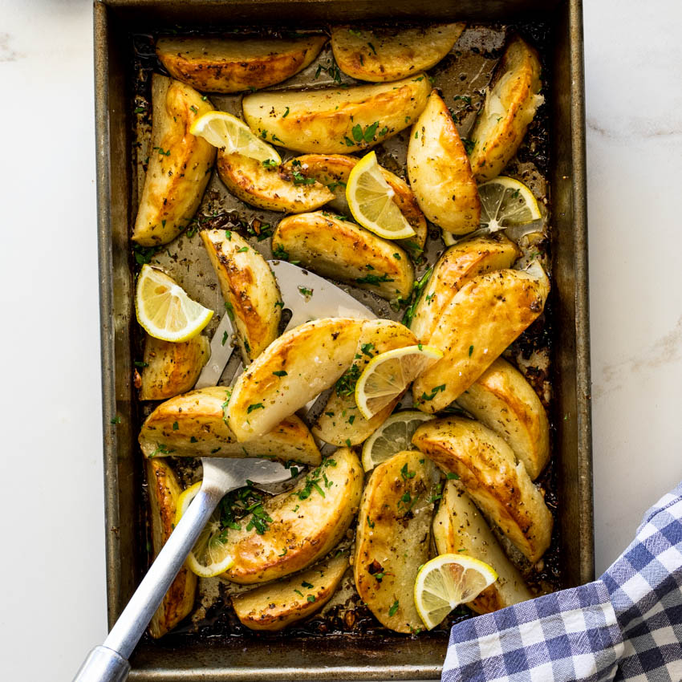

Grilled Greek Potatoes

Description
These grilled potatoes are great with souvlaki. All you need is a Greek salad for a full meal! They can be prepared hours before grilling.
Ingredients
- 4 large russet potatoes, scrubbed
- 2 tablespoons lemon juice
- 1 tablespoon olive oil
- 1 teaspoon finely chopped garlic
- Salt to taste
- 1 teaspoon Greek seasoning
Steps
- Pierce potatoes all over with a fork. Place potatoes in the microwave and cook until soft, about 15 minutes.
- Mix lemon juice, olive oil, garlic, and Greek seasoning together in a small bowl.
- Cut potatoes in half lengthwise and score the flesh. Brush on the seasoned oil.
- Preheat an outdoor grill for medium heat and lightly oil the grate. Place potatoes flesh-side down and grill until browned, 10 to 15 minutes.